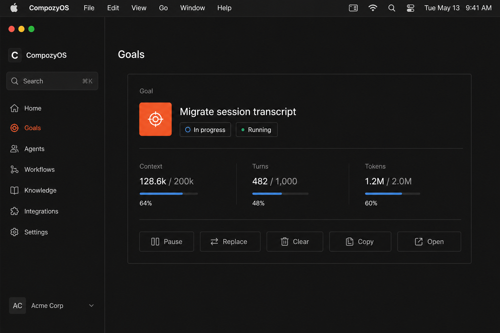
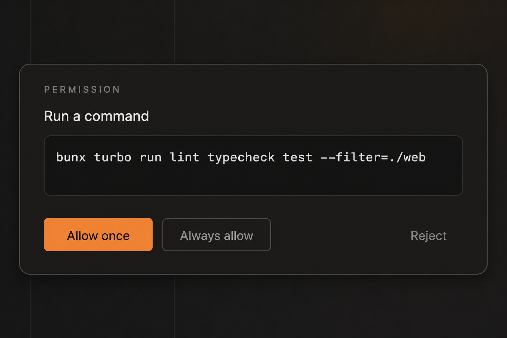

01
Not a supported file
SVG, ZIP, Office · Markdown is allowedType checkSignature, not extension.
diagram.svg is rejected even if the name looks visual. notes.md is not in this list — it is a ready file tile. Send stays disabled while any tile is rejected. Reason is the size line.02
Too large
keeps the well · names the capSize capIssue asks for configurable MIME + size limits. Prototype uses 10 MB as a labelled placeholder — not a shipped default. Applies to images and PDFs. Retry is absent here; the file cannot pass. Remove is the recovery.

03
Persist failed
draft kept · Retry on the tileRecoverableThe file never left the composer. Retry re-runs persist. Send stays disabled until the tile is ready. No toast.

04
Model does not accept images
pre-dispatch · never silent omit · files stayCapability gate
acp_caps has no image flag today — this row is new · prompt-images. Files are not in this gate: MD/TXT can still ride as prompt text. Recovery is Remove on the row, or pick another runtime. Send is disabled while images remain. No banner above the transcript.
This model does not accept images. Remove them or pick another model.